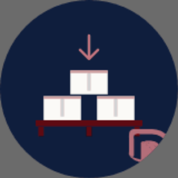
Almacenista
Esto NO es un patch — es una revisión mayor. El logo se reconstruyó, las variantes se sistematizaron y se agregaron sistemas nuevos. v4.4 suma los recursos gráficos chinos recoloreados a la marca, las plantillas de Stories/feed dentro del Generador de Redes y el Packing List bilingüe renovado (ver fila v4.4). v4.3 sumó la Academia del alumno, el Hub de Enlaces y la reestructura del registro. v4.2 sumó el Brand Hub y el Launcher.
1080×1080 (foto 2/3 + franja navy 1/3, sin logo en la imagen — la marca va en metadata del PNG), los 8 servicios (DDP principal · LCL · FCL Bodega · FCL Directo · Aduana · Inspección · Compra asistida · Terrestre), perfil por número (8 líneas) y kit de mensajería (bienvenida, ausencia, 9 respuestas rápidas, etiquetas) — sección 0985×55 mm, sangrado 3 mm) — frente papel con lockup canónico + datos de la persona, dorso navy con isólogo + tagline + QR vCard. Plantilla por empleado (incl. bilingüe ZH·Noto Sans SC). Spec de imprenta + imposición con marcas de corte.#25D366 documentado como excepción de plataforma — solo en acciones de WhatsApp, nunca como acento de marca512×512 con fondo transparente y aro blanco, listos para enviar · spec de formato + export .webp/.png — Aplicaciones (sección 12)#FBFAF7 con tokens propios --bg-nav (sección 06)DTDCARGO (una palabra, mayúsculas) a DTD Cargo (dos palabras, capitalizado, Archivo Black, gap 0.15em)erp/icons.jsx · sección 07filter: brightness(0) invert(1) sobre el isólogo — reemplazados por variantes nativasEl "para qué" antes del "cómo se ve". Esto es lo que la marca dice antes de mostrar nada.
Tagline corto, claro, repetible. Lo único que necesita un cliente para entender qué hacemos.
Casing: “Confianza” va con C mayúscula — es palabra-valor de marca, no adjetivo. Aplica en UI, portal, emails y piezas sociales. El sub-claim y los “niveles de confianza” (IA) siguen en minúscula.
Voz interna · filosofía operativa. Define el tono "sin bulla, con resultados".
"El boca a boca nos ha mantenido sólidos y constantes. No necesitamos tanta bulla cuando los resultados hablan por sí solos."
Por qué existimos, qué hacemos hoy y a dónde vamos. La base que sostiene cada decisión de marca y de producto.
Importar de China sigue siendo, para la mayoría, caro, lento y arriesgado. No tiene por qué serlo. Existimos para que cualquier comercio o emprendedor en Venezuela pueda hacerlo con confianza, sin viajar ni arriesgar su capital — de la fábrica a su puerta.
Llevamos tu mercancía de China a tu puerta con rapidez, economía y seguridad. Compramos, inspeccionamos, consolidamos y nacionalizamos a nuestro nombre. Tú solo recibes.
Cliente a cliente, contenedor a contenedor.
Ser el referente en logística entre China y Venezuela: la forma más confiable, económica y rápida de importar puerta a puerta. Con equipo propio en Yiwu y Valencia, +15 años de trayectoria y tecnología propia, hacemos que importar desde China sea simple, transparente y rentable.
Lo que el cliente siente en cada interacción con DTD.
Las cuatro promesas operativas que materializan el propósito.
La historia oficial. De primer viaje a Yiwu a 12+ servicios entre China y Latam.
Primer viaje de compra al país asiático.
Se formaliza la operación logística. Primera alianza en Guangzhou.
Operación a varios países. Venezuela arranca con Full Container Load.
Aumenta la consolidación de varios clientes por embarque.
Apertura en el mayor mercado mayorista del mundo.
Servicio puerta-a-puerta para clientes que necesitan end-to-end.
LCL puerta-a-puerta dedicado al mercado venezolano.
Verificación de proveedores como parte del flujo.
Bodega Yiwu ampliada. Suite logística consolidada.
Importación de equipos médicos cuando el mercado se paralizó.
Etiquetado, muestras y aéreo se suman al catálogo.
Cobertura end-to-end entre China y Latam con tecnología de gestión internacional.
Cuatro imágenes clave de la historia DTD. Arrastra las fotos reales a cada slot — siguen el sistema fotográfico (sección 09).
Orígenes comerciales · 2008
Operación VE
1er FCL · 2010
Lab · 2016
El isólogo es PNG nativo. El wordmark se construye con Archivo Black: DTD en wine, gap 0.15em, Cargo en navy.
 DTDCargo
DTDCargo


brightness(0) invert(1) que eran un parche para tapar el problema 1.Dejá un margen libre alrededor del logo igual a X = la altura del isólogo. Nada (texto, otro logo, borde, foto) entra en esa zona — es lo que le da aire y autoridad a la marca.
DTDCargoDTDCargo
isólogo solo · mín 32 px / 10 mm
Seis maneras de romper el logo. Si ves cualquiera de estas en una pieza, está mal — corrígela antes de publicar.
El branding usa una sola familia: Archivo (en dos pesos). Simple a propósito — para que en redes y piezas no haya que hacer malabares con varias fuentes. El ERP y el portal son otra capa con su propio sistema (al final, colapsado).
Apoyos técnicos (compartidos con el ERP): JetBrains Mono para códigos (Shipping Mark, tracking) y Noto Sans SC solo para chino (唛头). No son fuentes de titular — entran únicamente donde hay un dato o texto en mandarín.
No hace falta elegir entre fuentes. Titular en Archivo Black, texto en Archivo — la misma familia en dos pesos, imposible equivocarse. Un código (Shipping Mark) va en Mono solo si aparece.
Nunca hex literales en código. Siempre var(--*).
El verde de WhatsApp no es un color de marca — es la identidad de la plataforma. Lo usamos solo en acciones de WhatsApp para que el cliente reconozca el canal al instante: el CTA "Estimar por WhatsApp" de la calculadora, el FAB de chat y la app del bodeguero.
Para todo lo demás manda wine (CTA de marca) e ink. Si una pieza no es de WhatsApp, no lleva este verde.
El set principal son los 15 íconos de perfil (8 roles + 7 grupos) usados en directorio, CRM y WhatsApp.

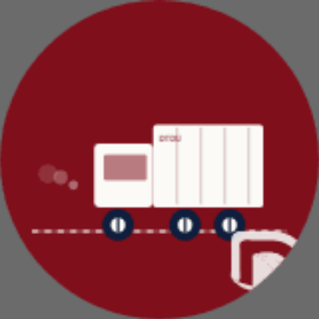
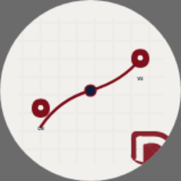
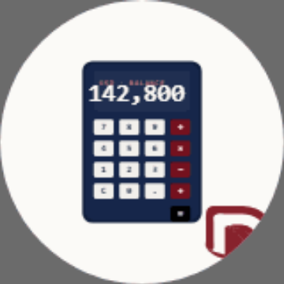
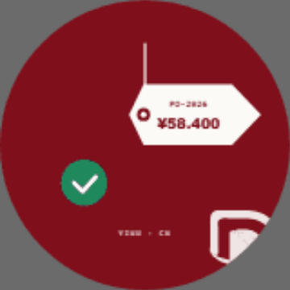
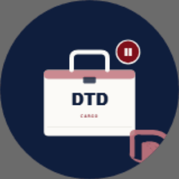
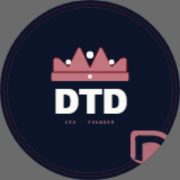
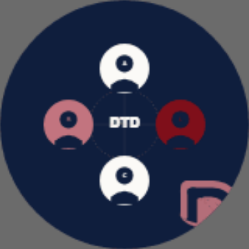
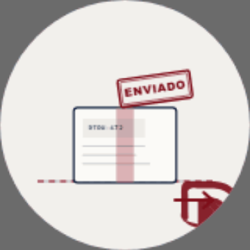
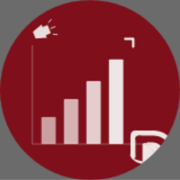
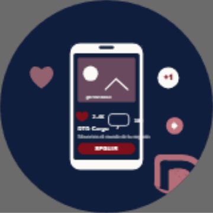
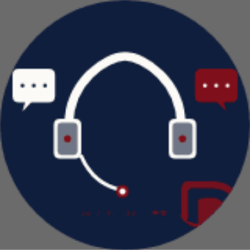
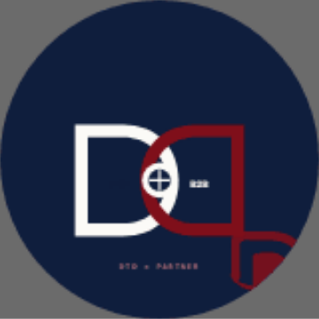
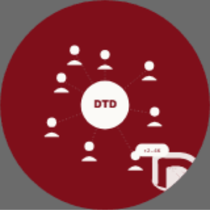
Cuatro motivos geométricos, todos mono-color, line-art fino y tono sobre tono. Heredan la cultura china del origen (China → Venezuela) pero recoloreados a nuestra paleta — nunca el rojo brillante ni el dorado del material genérico. Acompañan, no gritan.
Motivo de cabecera. Campo de fondo tono sobre tono o cenefa de borde. Ya vive en Portadas de Redes, el watermark y Brand in Motion.
Arcos concéntricos tipo escama. Cenefa de pie o campo sutil. Geométrico y repetible, igual que el meandro.
Solo la versión fina mono-línea, como acento de esquina o separador. Nunca rellena ni en rojo brillante. El toque más discreto del set.
La greca doblada en esquina arma un marco para sellos, diplomas o tarjetas. No es un motivo nuevo: sale del mismo meandro.
Cuatro esquinas independientes (no marco cerrado): enmarcan la pieza dejando los lados abiertos. Más ligero que el marco — ideal para posts, portadas y fotos.
Todos los motivos van mono-color en wine #7F0F1A (sobre claro), navy #0F1E3D, wine-soft o cream (sobre oscuro). Line-art fino, tono sobre tono, de apoyo. Nunca el rojo brillante ni el dorado del material chino genérico — rompen la paleta y empujan al cliché.
Dos motivos reservados para fechas especiales: Año Nuevo Chino (春节), Festival del Bote del Dragón (端午节) y campañas puntuales con China. No son parte del lenguaje gráfico diario — se usan solo en piezas de temporada.
El símbolo festivo más reconocible. Line-art, como acento de temporada — nunca rellena de rojo brillante.
Símbolo de buena fortuna y unión — encaja con “cliente a cliente, contenedor a contenedor”. Solo en temporada.
El dorado #B8893A (token --warning) se permite como acento solo en piezas festivas (Año Nuevo, 端午节, campañas de temporada) — autorizado por el usuario, 2026-06-19. Fuera de festividades, linterna y nudo van en wine. Nunca el rojo brillante ni el dorado saturado del material genérico.
El dragón fue la mascota del branding anterior (entrada web, GIF). Lo conservamos como símbolo de herencia, recoloreado a la marca en duotono mono-color — nunca en su versión multicolor original dentro del sistema. Uso: hero de temporada, entrada web, watermark grande, piezas China → Venezuela. No es de uso diario.
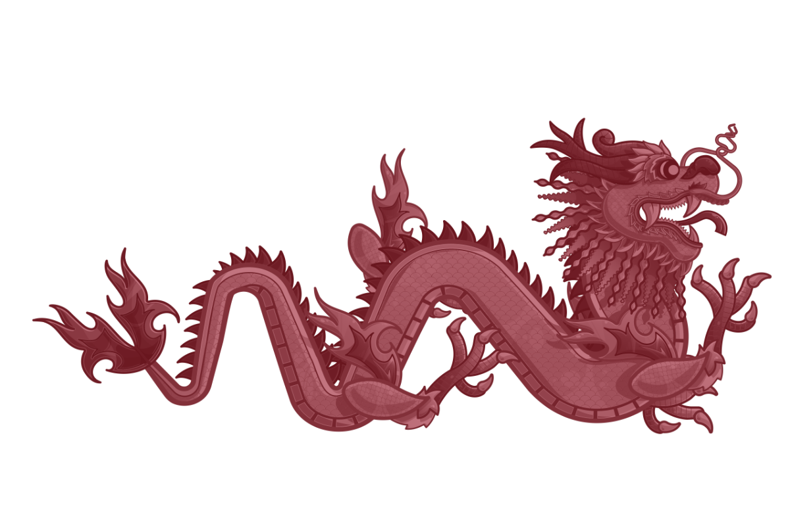

Generado a partir del dragón original. Para artes a gran escala (impresión, vinilo, aviso) conviene re-exportar desde el vector .ai / .svg para nitidez total.
El isólogo no es solo el logo — se aplica a decenas de touchpoints operacionales y comerciales. Todos viven centralizados en el Brand Hub (índice único de marca); el producto y las apps viven aparte, en el DTD Apps · Launcher.
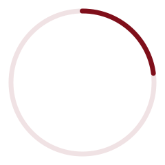
El isólogo con un pulse sutil para estados de carga. SVG (web, vector, el más rápido de implementar) · Lottie JSON (apps iOS/Android/RN) · GIF (universal). Construido sobre el isólogo de marca.
16/32/48/180 + ico
A4 + WhatsApp 1080×1920
Redondo · tinta wine
HTML embebible
SVG · Lottie · GIF ↑
IG · LI · TT · X
Isólogo central
16 emojis Slack
5 etapas tracking
Trazabilidad foto
10×15cm · Zebra ZPL
17 con texto · 512 transp.
85×55 · doble cara · QR vCard
Membrete · carnet · vinilo · roll-up
El sello oficial es la firma de la marca (isólogo mono-dark, tinta wine). A partir del servicio de control de calidad se suman dos sellos de verificación que estampan los reportes de inspección — producto y fábrica. Mismo lenguaje: doble aro, isólogo central, arco superior con el tipo de verificación y arco inferior «Verificado en origen · China».
Firma de marca · membrete, contratos, sello jurídico
Estampa la inspección pre-embarque (AQL)
Estampa la auditoría de planta
Para quien maneja las redes: la marca viene bloqueada en cada plantilla — subes la foto o los datos y descargas. Mismo motor del generador de catálogo (foto → pieza con marca → PNG con metadata de procedencia). Ocho herramientas en un solo lugar.
Foto + franja navy con título y un dato. Para cualquier servicio.
Vertical con áreas seguras para IG/FB Story y Estado de WhatsApp.
QR a WhatsApp (chat directo), WeChat (proveedores CN) o reseña en Google ⭐.
Prueba social: cita + nombre + ciudad + foto del cliente.
Fecha grande + CTA para cierres de consolidado y avisos.
Multi-lámina numerada: portada + pasos + cierre con CTA.
Biblioteca de textos por servicio + set de hashtags, listos para pegar.
Todos los tamaños y áreas seguras por plataforma, de un vistazo.
Clasificación (§15): son Herramientas — consumen el sistema, no lo cambian. Si un formato nuevo fija un tamaño que pasa a estándar, eso es una línea de norma aparte.
WhatsApp es la cara diaria de DTD con el cliente; WeChat, con los proveedores en China. Acá está consolidado todo: cómo queda el perfil de cada teléfono corporativo, el catálogo de servicios, los mensajes automáticos, los íconos de los grupos, los stickers del chat y el canal WeChat. Cada campo trae botón Copiar para pegarlo directo en WhatsApp Business.
#25D366 es excepción de plataforma — solo en acciones/botones de WhatsApp, nunca como acento de marca (ver §06 Paleta).
Elige el teléfono que vas a configurar: se actualiza el nombre de perfil, si lleva catálogo y qué respuestas automáticas van. Los campos comunes (categoría, descripción, dirección, horario, web) son iguales en los 8.
Solo en CRM, Administración y Ventas. Por cada artículo: Nombre · Precio · Descripción · Imagen · Enlace. El precio va siempre "Consultar" — no publicamos tarifas (van por calculadora o asesor).
Bienvenida + ausencia + 9 respuestas rápidas. En CRM/Administración/Ventas van completos; los operativos (Logística, Contabilidad, Transporte) cargan al menos el mensaje de ausencia + 2-3 respuestas de su área.
Los 7 íconos oficiales para nombrar y organizar los grupos internos y canales de WhatsApp — mismo set que el directorio y el CRM (§07). Un ícono por canal mantiene los chats reconocibles de un vistazo.
17 stickers con texto de 512×512, fondo transparente — marca, estados de envío y saludos que se entienden solos en el chat. Se descargan uno por uno o todos desde la pieza dedicada.
La otra punta de la cadena: con proveedores y equipo en China se habla por WeChat, no por WhatsApp. Misma marca, otra audiencia — acá el término principal es Shipping Mark (唛头), no Shipping Mark, y el texto en chino va en Noto Sans SC.
En logística la foto del almacenista, del contenedor y de la mercadería es prueba social diaria — la voz visual de la confianza. Cálida, real y trazable; nunca stock genérico.
Color grading levemente cálido. Luz natural cuando se pueda. Evitar el frío azulado de almacén y el HDR saturado.
Gente trabajando, manos en la caja, el código a la vista. Encuadres honestos. Cuadrado 1:1 para social, 16:9 para hero web, 4:3 para watermark.
Cada foto de operación lleva watermark con Shipping Mark + timestamp + bodega. La foto no decora: prueba que la carga existe y dónde está.
Arrastra las fotos reales del shoot a cada slot. Hasta entonces, cada uno describe qué debe capturar.
Caja con Shipping Mark visible, fondo de estantería ordenada, luz pareja. Watermark obligatorio.
Almacenista/inspector en acción, candid > retrato posado. Yiwu y Valencia. Vestimenta de trabajo real.
Buque, contenedor DTDU, camión. La cadena CN→VE hecha imagen. Nada de renders ni stock.
El testimonio social: la mercadería llegó. Cliente real, entorno real, con su permiso.
Isólogo mono-light en la esquina inferior derecha, sobre rgba(0,0,0,0.3) + blur 4px, con Shipping Mark · timestamp · bodega en JetBrains Mono. Regla: el watermark es silencioso — sella la foto sin competir con ella; nunca más grande, más opaco ni centrado. A la izquierda, aplicado sobre una foto real de bodega (cajas con Shipping Mark 唛头).
Castellano venezolano neutro, con tuteo (tú) — sin voseo. Tres registros según contexto — la marca se mueve entre los tres según urgencia y formalidad.
CTAs con verbo de acción: Crear estimado, Crear embarque, Enviar correo. Nunca “click acá”, “enviar formulario” ni “submit”.
Aceptamos los que el cliente ya usa (login, tracking, onboarding). Evitamos los gratuitos (“sign in”, “welcome flow”). El chino (唅头) solo de cara al proveedor.
Sin signos de exclamación múltiples, sin mayúsculas sostenidas, sin emoji decorativo en producto. El éxito se dice simple: “Embarque creado”.
El glosario operativo. La columna izquierda es la voz DTD; la derecha, lo que la rompe.
Dos términos centrales cambian de etiqueta según la audiencia — el valor del código (DTD-5532) nunca cambia, solo cómo lo nombramos.
La primera pieza de motion sistematizada: la portada-video de Facebook. El isólogo entra, el wordmark se asienta y la ruta China → Venezuela se dibuja sola — en loop de 14 s.
Isólogo (scale 0.82→1) → wordmark (slide-in lateral) → tagline (fade-up). El barco recorre la ruta del 20% al 55% del ciclo. Nada parpadea ni gira en bucle decorativo.
Curva cubic-bezier(.2,.7,.2,1) para los reveals. Fade global de entrada/salida (6% / 94%) para que el loop empalme sin salto. FB admite 20–90 s → se graban 2 vueltas.
Solo navy + cream + wine-soft. Patrón 回 tono sobre tono. Respeta prefers-reduced-motion (muestra el estado final fijo). Sin gradientes coloridos ni partículas.
Cada rol y canal tiene su número. El fijo corporativo es la línea CRM · atención al cliente (no del CEO).
| Almacenista · Transportista (misma persona, dos roles) | +58 424 950 8848 |
| Logística | +58 414 888 8805 |
| Administración | +58 241 414 7886 |
| Contabilidad | +58 414 887 0000 |
| Compras | +58 412 100 0006 |
| Sub-CEO | +58 412 454 5325 |
| CEO | +58 414 884 0000 |
| Oficina | +58 412 100 1000 |
| Despachos | +58 412 100 1001 |
| Marketing | +58 412 100 1002 |
| Redes Sociales | +58 412 160 5202 |
| CRM · Atención | +58 412 166 8021 |
| Alianzas Estratégicas | +58 412 100 1003 |
| Comunidad | +58 412 100 1004 |
Edificio Kokuy · Av. Bolívar Norte · Valencia, Carabobo
Vzla@dtdcargo.com
Yiwu Port Phase II · Warehouse 2 · No. 2 (Cargo 7-11) · Yiwu City, Zhejiang
China@dtdcargo.com · ☎ Sr. Sun +86 180 0689 1419
Las pantallas de producto (ERP interno, portal del cliente, apps de operario) tienen su propio sistema visual, pensado para leerse con mucho dato en pantalla. No es la capa de marca.
Equipo de producto y desarrollo.
Si construís el ERP, el portal o las apps, esto te aplica.
Diseño de marca, redes y publicidad.
Si haces flyers, posts o cualquier pieza de marca, usa las secciones 04–11 e ignora esta capa.
El ERP/portal NO usa Archivo. Tiene fuentes optimizadas para interfaces densas. Nunca las uses en piezas de marca; nunca uses Archivo como cuerpo de una tabla del ERP.
--f-display · títulos, KPI values--f-sans · cuerpo, labels, botones--f-mono · Shipping Mark, IDs, fechas--f-cn · solo chinoMono y Noto Sans SC son las únicas fuentes que cruzan ambas capas — pero solo donde hay un código o texto en chino, nunca como titular.
El sidebar del ERP pasó a Papel DTD con tokens propios — --bg-nav: #FBFAF7 — distintos de --bg-sidebar (navy, reservado para totales/sellos). El isólogo sobre nav clara usa la variante primary; sobre navy, reverse. Sin filtros CSS.
Ícono de la app de producto (operario / portal), sobre el isólogo en navy. Un solo diseño maestro 1024 px del que derivan todos los tamaños de iOS y Android — incluido el adaptive icon (capas foreground + background) que Android recorta en círculo, squircle o lo que use el launcher.
Fuente única. Esquinas a 23% (squircle iOS). Fondo navy #0F1E3D, isólogo cream — sin filtros.
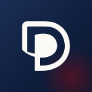
152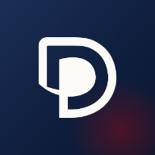
192 · xxxhdpi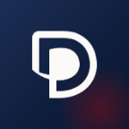
144 · xxhdpiEl adaptive icon son dos capas (foreground + background 432 px); el launcher las recorta a su máscara. La zona segura del foreground es el 66% central.
La barra lateral del ERP pasó de navy oscuro a Papel DTD (el blanco cálido de la marca). Tokens propios — no se tocó --bg-sidebar, que sigue siendo superficie oscura. En modo oscuro la barra se mantiene navy.
Colores de estado del producto (no son acentos de marca): solo para confirmaciones, riesgos y errores reales en el ERP/portal.
Etiqueta interna 10×15 cm (4×6") para impresora térmica Zebra a 203 dpi — Shipping Mark grande + código de barras Code 128. Preview + código ZPL editable y descargable.
El book vive en dos capas: el Sistema — lo normativo, cambia poco y obliga a todo lo demás a obedecer — y las Herramientas — lo aplicado, crece rápido y solo consume reglas que ya existen. Toda pieza nueva entra por una regla clara, sin improvisar.
Propósito, logo, tipografía, color, iconografía, dirección fotográfica, voz. Define tokens y reglas que el resto debe obedecer. Cambia poco; cuando cambia, dispara BRAND-CHECK.
Factura, sello, sticker pack, portadas, catálogo WhatsApp, generadores. Consumen el Sistema para producir un entregable en un canal. Crecen seguido; son aditivas y no tocan el núcleo.
¿Obliga a otros a cambiar? → Sistema. ¿Solo produce una pieza? → Herramienta.
Aplica el sistema a un canal. Si trae un ratio o grid que pasa a estándar, eso es una línea de norma en el Sistema.
Pura aplicación — ya existe el banner 2048×1152. Vive junto a las portadas de redes.
La dirección fotográfica es norma (§10). El banco de fotos es herramienta.
Los principios de movimiento son norma (§12); los templates y exportadores son herramienta.
Toda herramienta nueva nace con su card patrón (qué es → spec → acción → regla que obedece) y su link a la norma del Sistema. Si no obedece ninguna regla existente, esa es la señal de que primero falta una norma en el Sistema.
Material complementario para devs, Claude Code y handoffs.
Construyendo confianza cliente a cliente, contenedor a contenedor. Este book es la única fuente de
verdad de la identidad DTD-Cargo: si una pieza no está acá, todavía no es oficial. Antes de cambiar
colores, tipografía o el logo, validá contra las reglas — y si algo las rompe, avisá con
BRAND-CHECK.
DTDCargo
© 2026 DTD-Cargo · Doortudoor Services · Brand Book v4.4 · Junio 2026 · documento privado, no difundir
www.dtdcargo.com · Made in Yiwu & Valencia

Portadas de canal · YouTube + Facebook
Sistema de cabeceras sobre la marca: isólogo + wordmark, paleta navy/wine/paper y el patrón 回 (meandro) con la ruta China→Venezuela. 3 direcciones — Meandro Navy, Paper Oriente y Contenedor — cada una entregable a tamaño real de plataforma, siempre dentro del área segura.
2048×1152· zona segura1235×338851×315(móvil recorta a640×360)1250×463· 20–90 s en loopNinguna plataforma soporta logo “interactivo” (hover/click) en la cabecera. La especificación completa, áreas seguras y descargas viven en la pieza interactiva ↓